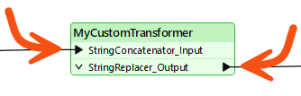
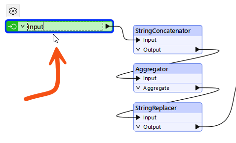
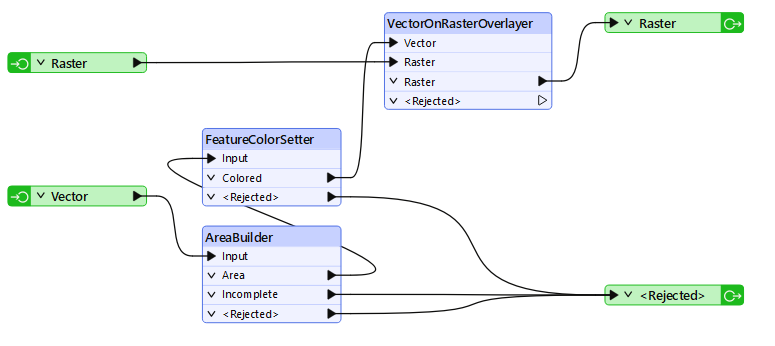
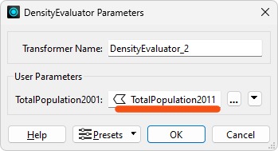
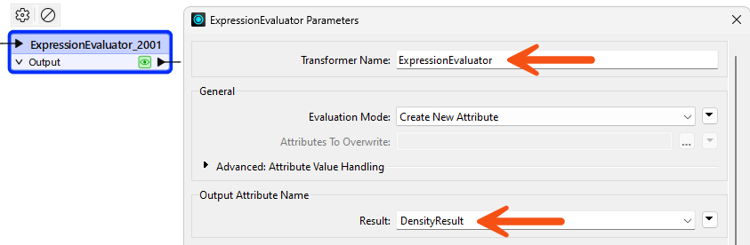
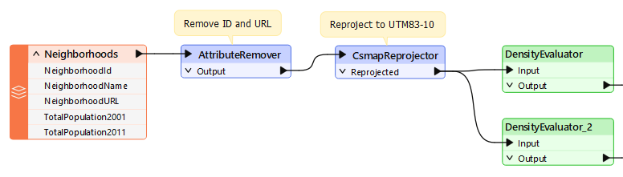

After completing this lesson, you’ll be able to:
Like a normal FME transformer, a custom transformer has several input and output ports:

These input and output ports are defined by input/output objects in the custom transformer definition itself:
You can rename these input/output objects can be renamed. These changes will appear when you view the custom transformer on the canvas. You can double-click the object, choose Rename from the context menu, or press F2 to rename the object.
For example, here, the user pressed F2 and renamed the input port from StringConcatenator_Input to simply Input:

Renaming the input and output ports helps make the custom transformer intentions more explicit; for instance, it helps the user understand what data type is required as input.
For example, after editing, the transformer might look like this:

Here, the user renamed the input port to Input. Renaming it to "Strings," "Lines," or "Raster" (for example) would help guide other transformer users as to what data is required.
However, they renamed the output port to illustrate the emerging data type.
Besides renaming ports, adding new ports to a custom transformer is possible.
To do so, select Insert Transformer Input (or Output) from either the menubar or the canvas context (right-click) menu:

For example, here, a user has ports to handle two streams of input data and two streams of output (one port for the required output, another that handles rejected features:

This means that each instance of the custom transformer has two input and two output ports:

You continue to work with your colleague, who created a workspace that calculates the population density for neighborhoods in Vancouver.
In the last exercise, you turned their workspace into a custom transformer for reuse. Now, you must show how to use it multiple times and apply edits to its definition.
Open the starting workspace in FME Workbench (2024.1 or later).
Notice that we started with two ExpressionEvaluators and now have one ExpressionEvaluator and one custom transformer. Let's place another instance of the custom transformer in place of the ExpressionEvaluator.
Click on the ExpressionEvaluator_2011 and press the delete key to delete it.
Click on the DensityEvaluator custom transformer and press Ctrl+D (or right-click > Duplicate) to create a duplicate copy of it. This has the same effect as placing a new instance but is quicker. If desired, you could do the same task through Quick Add or the Transformer Gallery.
Connect the second DensityEvaluator into the workflow, in parallel and not in series:

By creating a second instance of the custom transformer, we've started to re-use our content, which is great. However, the second instance currently needs to process the correct data.
Inspect the parameters for DensityEvaluator_2 and set the population parameter to TotalPopulation2011 (not 2001):

Run the workspace and inspect the output to ensure FME processed the data correctly.
One obvious problem with the transformer's output is that the result is put into an attribute called PopulationDensity2001, regardless of the data being processed.
This is not useful; for example, the 2011 results also get the same name as would any other scenario where we used this transformer. We should improve this by making the output name more generic.
Click the DensityEvaluator tab to switch the canvas to the custom transformer definition. Inspect the ExpressionEvaluator_2001 parameters. Change the Transformer name to ExpressionEvaluator since we are processing more than just 2001 data. Then change the name of the Result parameter to DensityResult:

If you rerun the workspace (run it from at least the custom transformer onwards) you’ll notice that DensityResult is the attribute output by both instances of the custom transformer; i.e., one edit has fixed both of them!
We should also change the custom transformer's port names. At the moment they are not very elegant.
Within the DensityEvaluator tab, click the cogwheel icon of the input port object (currently labeled AreaCalculator_Input). Inspect its parameters and change the Transformer Input Name to Input.
Now repeat the process for the output port object, renaming Transformer Output Name to Output:

Click the Main tab to check back on the main canvas and confirm the changes have been made:

As in the above image, you must manually resize the transformers to fit their new naming style.